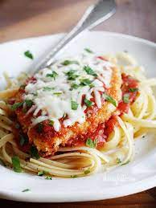

Chicken Parmesan

Description
Reprehenderit cupidatat aliqua cillum laboris fugiat ipsum adipisicing. Aute velit ea sit ipsum. Officia dolore elit in enim amet sit tempor reprehenderit veniam do fugiat. Duis dolore fugiat velit ullamco consectetur veniam est voluptate irure. Do enim do eu proident mollit Lorem eu minim cillum veniam cillum consectetur pariatur. Anim eu dolore aliqua excepteur Lorem consequat ex labore nisi tempor cillum nostrud tempor.
Ingredients
- 1 chicken breast, halved
- 1 large egg
- 1 cup panko / bread crumbs
- 2 tbsp flour
- 3/4 cup grated Parmesan cheese
- 1/2 cup tomato sauce
Steps
- Preheat oven to 450 degrees F.
- Pound chicken breasts. Season.
- Beat eggs. Set aside.
- Mix bread crumbs and 1/2 cup Parmesan cheese. Set aside.
- Coat chicken in flour. Dip in egg. Place in crumb mixture and coat both sides.
- Heat skillet. Fry chicken in skillet 2 minutes per side. Transfer to a baking dish.
- Top each chicken breast with tomato sauce and cheese. Bake 15 - 20 minutes, til cheese is browned and chicken cooked through.